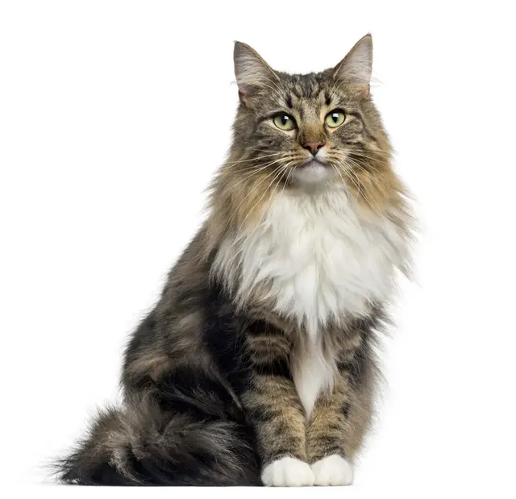

Norwegian Forest cats are known as “gentle giants”. These cats have a very soft, sweet, and calm temperament, despite being a larger cat breed. Striking looks and a warm personality, an interesting combination [1], [2], [3], [4]!
Appearance
The Norwegian Forest cat breed has a distinctive long, thick, and lavish coat, which served as natural protection when they lived in the forest and is well suited for the brutal Norwegian winters! Its coat is doubled, with longer, guard hairs on top of a dense undercoat, along with being waterproof and insulated! Norwegian Forest cats have coats that can be of various patterns and colors! Along with its coat, the breed is eye-catching by being a larger cat breed, being twice as large compared to a medium size cat! The breed is considered a longhair, large size cat, weighing from 6kg to 8kg.
Personality
The Norwegian Forest cat breed is a mild-mannered cat, with a sweet, warm, laid-back, and independent personality. They do not demand constant attention but enjoy company. They are content by spending quality time with their loved ones for example, simply by resting in the same room with their humans. They do not mind alone time, and will often spend it either sleeping or entertaining themselves. This breed is moderately active, they enjoy playing, exploring, and their strong claws make them excellent climbers! Their spurts of activity are usually followed by a long nap. Norwegian Forest cats love to sleep and will often decide to cuddle up in your lap or sleep on your pillow! Although love cuddling, they typically do not enjoy being picked up or held. They are very affectionate with their family members, but when it comes to strangers, they are not fond of them. These cats are low to medium vocal, meowing with a soft, tender voice only when needed.
History
The Norwegian Forest cat breed is believed to be around 1000 to 2000 years old! It is a natural breed, meaning that it developed over time without intentional intervention or human manipulation. Throughout history, Norwegian Forest cats traveled with the Vikings, keeping their ships and villages free of vermin. The breed also has a significant place in Viking legends and Norse mythology! They were mentioned and referred to as the “Skogkatt”, the giant cats that pulled the goddess Freya’s chariot! Unfortunately, after the Second World War, as many other breed, the Norwegian Forest cat nearly became extinct! However, the Norwegian Forest Cat Club worked to bring the breed’s numbers back up [1], [2], [3], [4]!